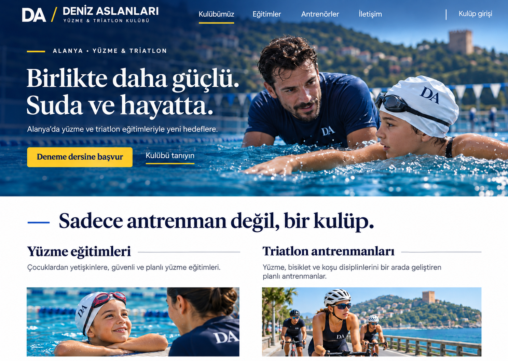
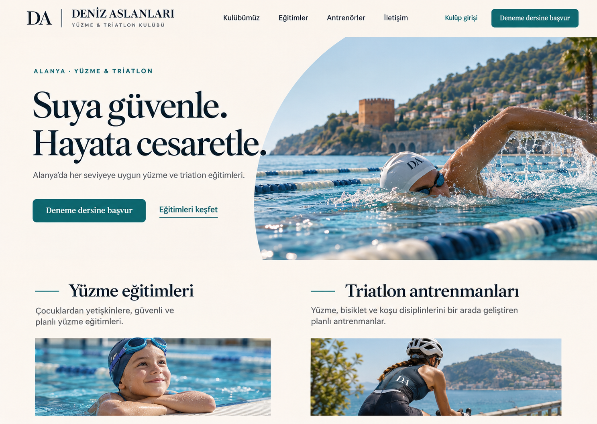
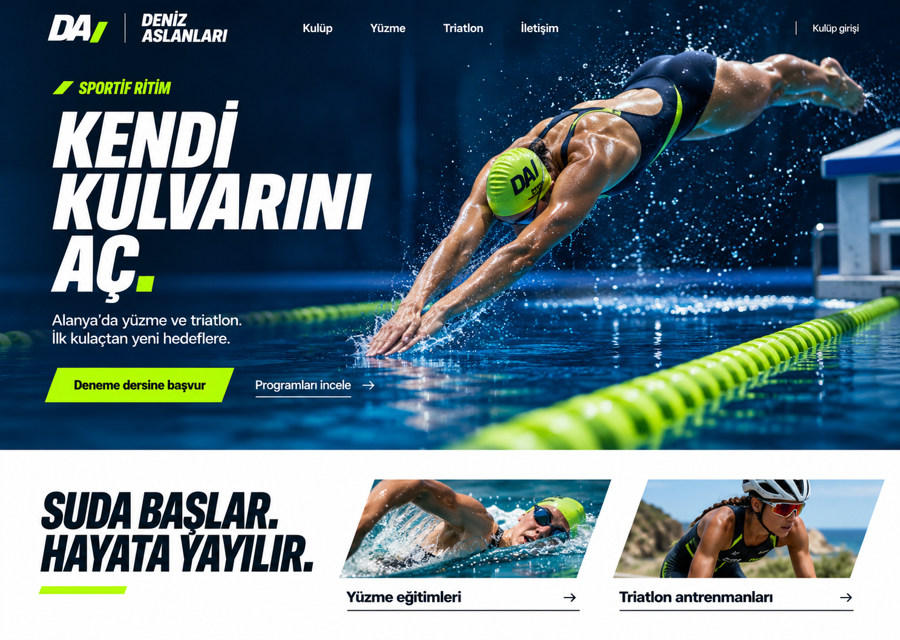
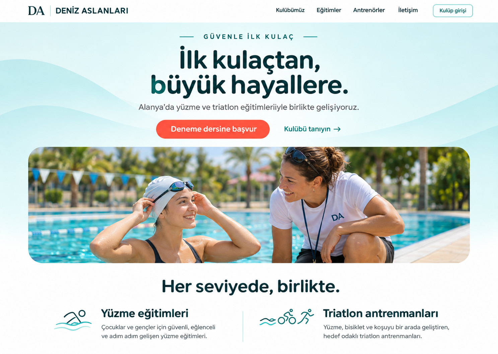
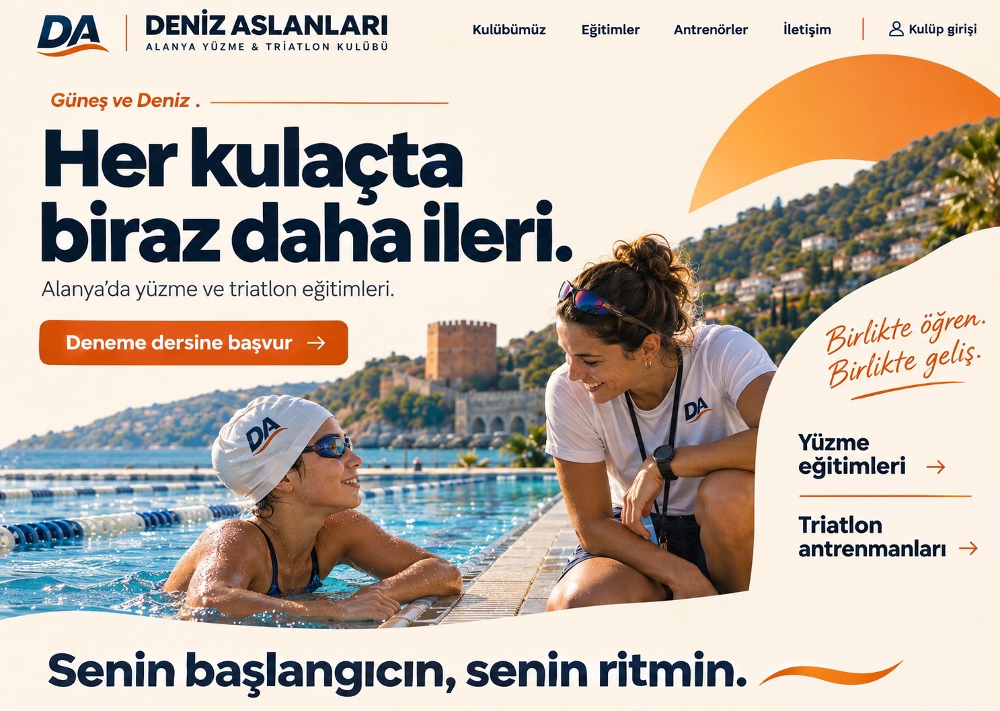
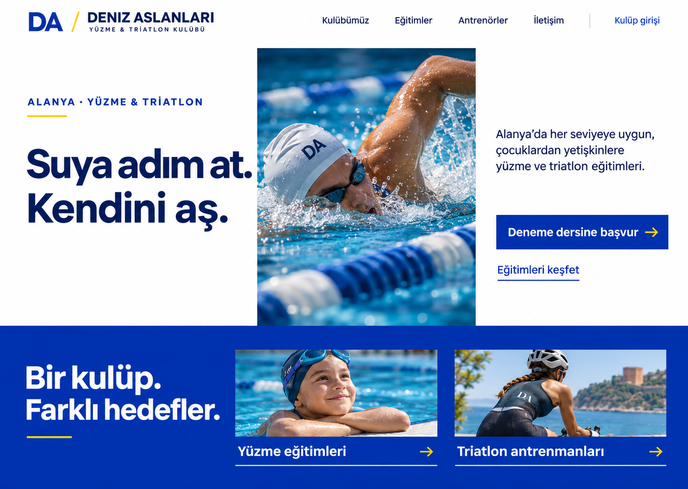
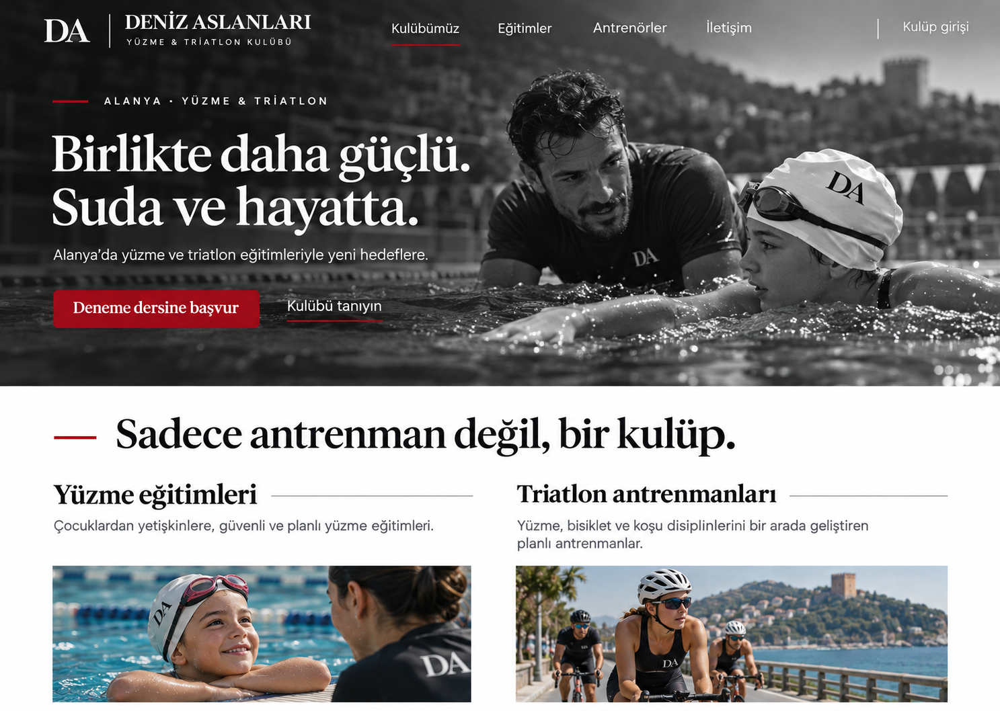

6’nın yerleşimi + 5’in renkleri

Birleşik tasarım önerisi.
Tasarım 1

Tasarım 2

Tasarım 3

Tasarım 4

Tasarım 5

Tasarım 6

Altı görseli inceleyip sohbette tercih ettiğiniz tasarımın numarasını yazın.
Bunlar görsel taslaklardır; çalışan kulüp sitesi değildir. Resme dokunarak tam boy açabilirsiniz.

Birleşik tasarım önerisi.





